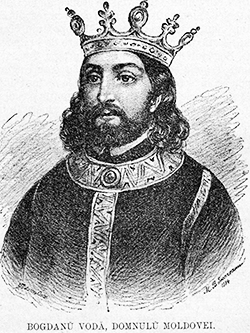

Bogdan al III-lea
Bogdan al III-lea cel Orb (n. 9 martie 1479,Huși, Vaslui, România – d. 20 aprilie 1517,Huși, Vaslui, România) a fost domn al Moldovei între 2 iulie 1504 și 20 aprilie 1517. Este fiul lui Ștefan cel Mare și al doamnei Maria Voichița, fiind asociat la domnie încă din 1497. La moartea tatălui său avea circa 25 de ani.
Origine și familia
Bogdan a fost fiul lui Ștefan cel Mare și al doamnei Maria Voichița, fiica domnitorului Țării Românești, Radu cel Frumos, nepoata lui Vlad Dracul și strănepoata lui Mircea cel Bătrân. S-a căsătorit de trei ori, mai întâi cu Anastasia (d. 1512), apoi cu Stana (d. 1518) și în cele din urmă cu Ruxandra, fiica principelui Țării Românești Mihnea cel Rău. A avut copii doar din relații ilegitime. Trei dintre fiii săi au fost, de asemenea, principi ai Moldovei: Ștefăniță Vodă (a domnit din 1517 până în 1527), Alexandru Cornea (a domnit din 1540 până în 1541) și Alexandru Lăpușneanu.
Relațiile cu Polonia
În momentul în care a luat domnia, a și avut motive de luptă cu polonezii: cerând mâna Elisabetei, sora regelui Poloniei, căruia îi dăruise și două cetăți, și fiind refuzat de două ori, Bogdan pustiește Polonia. În cele din urmă se convine asupra căsătoriei cu unele promisiuni favorabile in ceea ce privește catolicismul în Moldova (1506). Curând după aceea, regele Poloniei moare, iar succesorul acestuia nu mai aprobă căsătoria, ceea ce provoacă o serie de devastări reciproce[2], până la 4 octombrie 1509, când Bogdan al III-lea este învins pe Nistru, lângă Hotin și se face pace la 17 ianuarie 1510, iar Bogdan renunță la căsătorie în schimbul unor avantaje politico-economice. Tot în 1510, tătarii năvălesc in Moldova[3], pradă cumplit țara și iau cu ei 74 de mii de robi. În noiembrie 1510, Bogdan al III-lea preîntâmpină o nouă năvălire tătărească. Marele pericol reprezentat de tătari devine devastator în 1511 când aceștia ocupă țara. Polonezii, de frică, îi trimit ajutor și Bogdan îi lovește pe năvălitori în mai 1512.
Relațiile cu Țara Românească
Câțiva ani mai înainte, în 1507, Bogdan s-a aflat pe punctul de a intra în conflict cu domnul Țării Românești, Radu cel Mare, cei doi împăcându-se în urma intervenției mitropolitului Țării Românești, Maxim, rudă cu cei doi, ce a invocat tocmai argumentul rudeniei și al folosirii unei limbi comune. În 1514, logofătul Tăutu este trimis la Poartă să închine de bunăvoie Moldova, în condiții cvasi-identice cu cele ale Munteniei: autonomie sub toate aspectele,recunoașterea suzeranității otomane și plata unui peșcheș anual. În acest fel, Bogdan scapă de pericolul tătăresc și de alti dușmani, care astfel, deveneau dușmanii Porții.
În 1513 Bogdan al III-lea s-a însurat cu prințesa Ruxandra, fiica lui Mihnea cel Rău din Muntenia, după ce mai înainte fusese însurat cu Doamna Stana și cu Nastasia. Bogdan al III-lea a bătut și monede.
A murit la 20 aprilie 1517 la Huși, fiind îngropat la Mănăstirea Putna.
Despre numele său
Datele privitoare la sluțenia lui Bogdan al III-lea provin de la cronicarii poloni, niciun document intern nu consemnează așa ceva.
Lui Bogdan al III-lea i s-a atribuit cea mai cunoscută poreclă a sa - de Orbu - datorită lui Grigore Ureche (abia în secolul al XVII-lea). Acesta, în letopisețul său, îl numește Bogdan Vodă cel Orb și Grozav (în sensul de groaznic la înfățișare sau grozav, extraordinar în timpul luptelor). El era orb la un ochi, posibil în urma bătăliei de la Codrii Cosminului din 1497.Grigore Ureche s-a folosit de informații polone subiective (exagerarea defectului avut de voievodul român era folosită de regele Poloniei drept pretext pentru anularea logodnei dintre sora sa și Bogdan al III-lea).
Teoria legată de sluțenia lui Bogdan al III-lea este anulată și de imaginile sale de pe frescele din bisericile Sfântul Ilie din Suceava și Sfântul Nicolae din Dorohoi, de la Mănăstirea Dobrovăț sau Mănăstirea Putna.
|

|